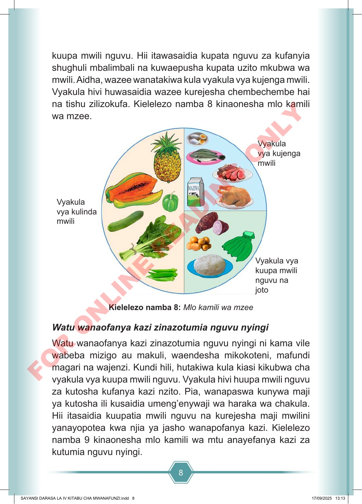

8 kuupa mwili nguvu. Hii itawasaidia kupata nguvu za kufanyia shughuli mbalimbali na kuwaepusha kupata uzito mkubwa wa mwili. Aidha, wazee wanatakiwa kula vyakula vya kujenga mwili. Vyakula hivi huwasaidia wazee kurejesha chembechembe hai na tishu zilizokufa. Kielelezo namba 8 kinaonesha mlo kamili wa mzee. Vyakula vya kulinda mwili Vyakula vya kujenga mwili Vyakula vya kuupa mwili nguvu na joto Kielelezo namba 8: Mlo kamili wa mzee Watu wanaofanya kazi zinazotumia nguvu nyingi Watu wanaofanya kazi zinazotumia nguvu nyingi ni kama vile wabeba mizigo au makuli, waendesha mikokoteni, mafundi magari na wajenzi. Kundi hili, hutakiwa kula kiasi kikubwa cha vyakula vya kuupa mwili nguvu. Vyakula hivi huupa mwili nguvu za kutosha kufanya kazi nzito. Pia, wanapaswa kunywa maji ya kutosha ili kusaidia umeng’enywaji wa haraka wa chakula. Hii itasaidia kuupatia mwili nguvu na kurejesha maji mwilini yanayopotea kwa njia ya jasho wanapofanya kazi. Kielelezo namba 9 kinaonesha mlo kamili wa mtu anayefanya kazi za kutumia nguvu nyingi. SAYANSI DARASA LA IV KITABU CHA MWANAFUNZI.indd 8 SAYANSI DARASA LA IV KITABU CHA MWANAFUNZI.indd 8 17/09/2025 13:13 17/09/2025 13:13 F O R O N L I N E R E A D I N G O N L Y